Eksperiment
Eksperimenti so bili izvedeni v času jesensko – zimske karantene zaradi epidemije Covid-19 v naših sobah, kabinetih in na zunanjih okenskih policah, na milost in nemilost zdolgočasenih sosedov, ki so sodili našemu mentalnemu stanju. Razmere so nas prisilile ne le v odkrivanje najrazličnejših metod komunikacije za uspešno skupno reševanje nastalih težav tekom raziskovalnega dela, temveč tudi v aktivacijo vseh naših ustvarjalnih žilic, da so eksperimenti uspeli; namreč to se je kaj kmalu izkazalo za veliko večjo težavo, kot smo pričakovali pri izbiri projekta.
Ker celotna naloga temelji na gorenju, se za trenutek pomudimo še pri obnovitvi srednješolskega znanja kemije. Gorenje je eksotermna redoks reakcija, pri kateri se uporabljata oksidant in gorivo, nastajajo pa oksidirani plinasti produkti, toplota in svetloba. V našem primeru kot oksidant v reakcijo vstopa okoliški kisik, kot gorivo parafin, kot oksidiran produkt pa izstopa ogljikov dioksid, saj predpostavljamo popolno gorenje.
-
snemalna naprava
bele visoke sveče (r ≈ 20mm, h ≈ 140 mm),
vžigalice,
Izvedba eksperimenta je idejno zelo enostavna. Dva oscilatorja s poljubnim, a enakim številom tesno povezanih sveč postavimo vsak sebi. Sveče prižgemo in ko se stopi dovolj voska, da je dotok goriva konstanten, lahko z nekaj (ali veliko) sreče opazimo oscilacije plamenov. Vsi eksperimenti so bili posneti s kamero naših mobilnih telefonov, posnetki pa obdelani v programu Tracker.
(Prikaz izvedbe eksperimentov.)
Za parametre, vredne raziskovanja smo določili razdaljo med oscilatorjema, število sveč, ki gradijo oscilator ter ambientalno temperaturo. V odvisnosti od teh parametrov smo raziskali najbolj opazno lastnost katerega koli nihajočega sistema, njegovo frekvenco.
Med izvajanjem eksperimentov smo opazili, da sveče nihajo z več amplitudami. Vsi rezultati, predstavljeni v tem poročilu se nanašajo na oscilacije, pri katerih je amplituda plamena tolikšna, da plamen v svojem maksimumu proizvede tj. ''ognjeni jezik''.(slika2) .

(slika2)
Že pri prvih poskusnih eksperimentih se je izkazalo, da je gorivo, torej material, iz katerega je sveča, pomemben dejavnik, ki odloči, če bo do oscilacij prišlo. Pomembno je zato poudariti, da je eksperimente, ki obravnavajo eno in dve sveči kot en gradnik oscilatorja izvajal en član ekipe, tiste z več gradniki pa drug. Ker na embalaži naših sveč ni pisalo, kolikšen delež parafina jih gradi, moramo ta zadržek venomer imeti v mislih, ko razpravljamo o spodnjih rezultatih. V napako tega nismo všteli, saj bi sicer ta presegala vse meje.
FREKVENCA V ODVISNOSTI ŠTEVILA GRADNIKOV OSCILATORJA
- 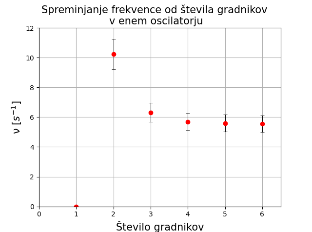
Razpredelnico: Razpredelnica dobljenih frekvenc nihanja za izbrano število gradnikov za en oscilator
Slika 4: Prikaz postavitve sveč pri izvedenih poskusih
Slika 3: Graf odvisnosti frekvence od števila sveč v enem oscilatorju. Opozorilo: za N=2 je bila uporabljena drugačna sveča kot za ostale N.
Spodnji graf prikazuje rezultate meritev frekvenc različnih konfiguracij sveč, povezanih v eno enoto. Frekvenca oscilacij z dodajanjem novih gradnikov pada, medtem ko intenziteta svetlobe narašča
Med obdelavo podatkov teh meritev smo lahko podrobno opazovali obnašanje plamena pred in med osciliranjem. Plameni se pred začetkom nihanja zvišajo in stanjšajo, hkrati pa se rahlo nagnejo proti središču oscilatorja in tvorijo navidezni stožec. Med nihanjem pa se plameni gibajo v 4 korakih:
-
plameni so rahlo nagnjeni proti sredini, z mirovno dolžino,
plameni se sunkovito podaljšajo, nagib proti sredini je večji od nagiba plamena z mirovno dolžino, ustvari se ''ognjeni jezik'',(r ≈ 20mm, h ≈ 140 mm),
plameni se lahko skrčijo, odebelijo, zgornja polovica pa se pomakne navzven,
plameni so izrazito nagnjeni proti sredini, dolžina plamena je približno enaka dolžini v mirovni legi.
Takšno gibanje se nato ponavlja, dokler so izpolnjeni pogoji za oscilacije.
Sosledje zgornjih dogodkov prikazuje gibanje plamenov med oscilacijami za konfiguracijo (5), dogodki veljajo za poljubno število gradnikov.
FREKVENCA V ODVISNOSTI OD RAZDALJE MED GRADNIKOMA
Za bolj celostno in temeljito obravnavo spreminjanja frekvence v odvisnosti od razdalje med oscilatorjema smo se odločili opazovati dva primera; ko en oscilator gradi ena in ko ga gradijo tri tesno povezane sveče.
Opazili smo več nihajnih načinov:
nihanje v fazi,
nihanje v protifazi,
nekoherentno obnašanje ter,
''ničto'' fazo.
1. Nihanje v fazi
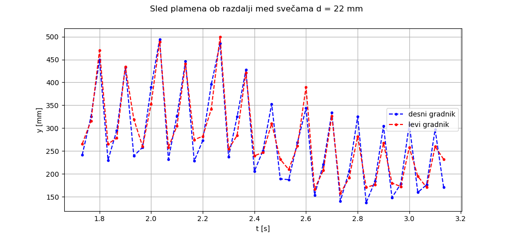 Prikaz sledi vrha plamena za primer, ko sta oscilatorja na medsebojni razdalji 32mm, oscilator gradi 1 sveča. Plamena nihata v protifazi. Takšne oscilacije opazimo v obeh primerih, le da ena sama sveča niha v fazi na medsebojni razdalji 22mm, tri pa vse do 50mm, zaradi česa lahko opazimo, da frekvenca s povečevanjem razdalje blago narašča.
2. Nihanje v protifazi
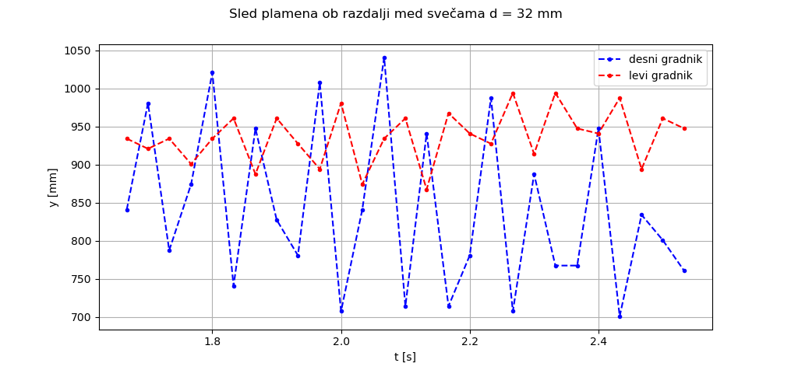 Prikaz sledi vrha plamena za primer, ko sta oscilatorja na medsebojni razdalji 22mm, oscilator gradi 1 sveča. Plamena nihata v fazi. Očitno je ta nihajni način preferenčno stanje oscilatorjev na precejšnjem območju medsebojnih razdalij. Tudi do lahko opazimo, pa čeprav šibek, trend naraščanja frekvence z razdaljo, ki je bolj izrazit v primeru, ko oscilator gradijo tri sveče. Omenimo lahko tudi, da je takšen nihajni način obstojem dlje, kot nihanje v fazi.
3. Nekoherenčno obnašanje
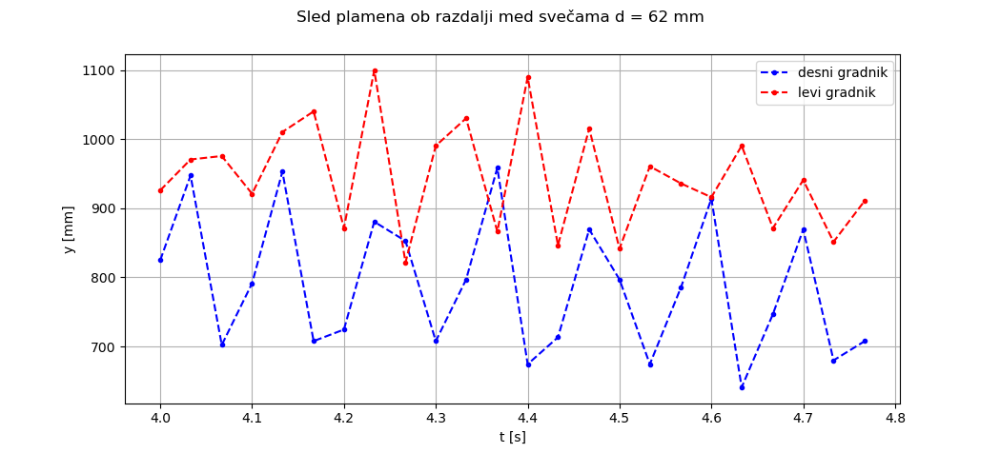 Prikaz sledi vrha plamena za primer, ko sta oscilatorja na medsebojni razdalji 62mm, oscilator gradi 1 sveča. Plamena ne nihata ubrano, stanja, ko je oscilator v fazi in protifazi se prosto izmenjujejo. Na razdaljah, ki so nekajkrat večje od premera oscilatorja lahko opazimo pojav, ko eden od njiju niha, drugi pa v povprečju miruje ali pa se prosto in naključno izmenjujeta faza in protifaza. Pojav, ko eden od oscilatorjev skoraj miruje, drugi pa nemoteno niha še ne bi bil čuden v primeru treh sveč, v primeru ene pa je gotovo presenečenje, saj ena sama sveča ne oscilira, kot smo opisali v prejšnjem razdelku. Poleg tega pa v primeru treh sveč opazimo, da je frekvenca oscilacij za medsebojne razdalje nad 80mm od te neodvisna. Ustali se pri vrednosti 6.3Hz, kar pa se ujema s frekvenco, ko gori en sam oscilator. Pa vendar sled plamenov sveč kaže, da nihata v protifazi drug glede na drugega.
4. ''Ničta'' faza
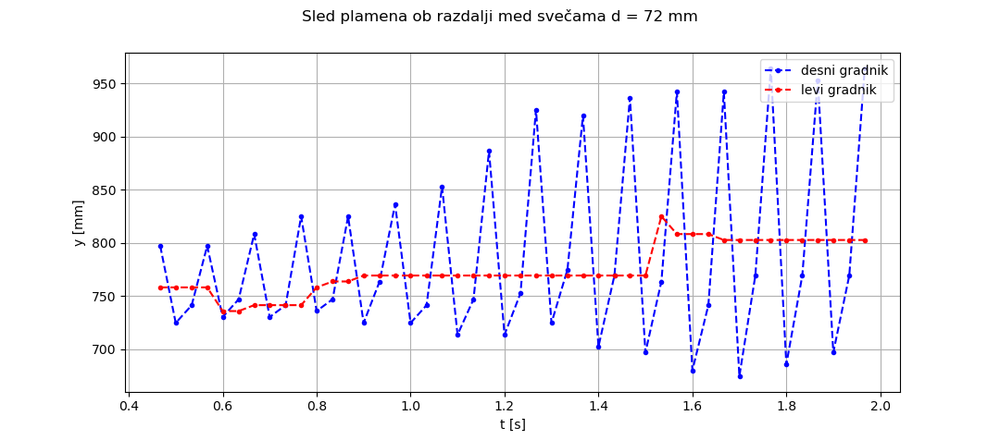 Prikaz sledi vrha plamena za primer, ko sta oscilatorja na medsebojni razdalji 72mm, oscilator gradi 1 sveča. Eden od plamenov večino časa miruje, drug pa nemoteno niha. Še zadnji opazljiv pojav, ki na grafu sicer ni prikazan, je stanje mirovanja plamenov. To se zgodi spontano in traja poljubno dolgo, ne glede na to kakšne motnje ustvarimo v bližnji ali daljni okolici sveč. Tudi dotok goriva je nespremenjen glede na prejšnja stanja. Takšno obnašanje lahko traja tudi do 10 minut, medtem ko lahko fazo ali protifazo opazujemo nekaj sekund hkrati.
TEMPERATURA
Za opis vpliva temperature na naš problem se bomo morali zadovoljiti z opisnimi rezultati, saj nam zaradi okoliščin niso bile na voljo merilne naprave, ki bi jih potrebovali za pridobitev eksaktnih rezultatov.
Opazili smo, da je verjetno za pojav vseh oscilacij večja, tem nižja je ambientalna temperatura. Tako pri nizkih temperaturah (primerljivih z zunanjo ≈ 5°C) do pojavov pride vsaj dvakrat toliko, kot pri sobni temperaturi (≈ 20°C). Ambientalna temperatura prav tako vpliva na trajanje oscilacij, ki so pri enakih pogojih vsaj dvakrat daljši.
Zasnova eksperimentov:
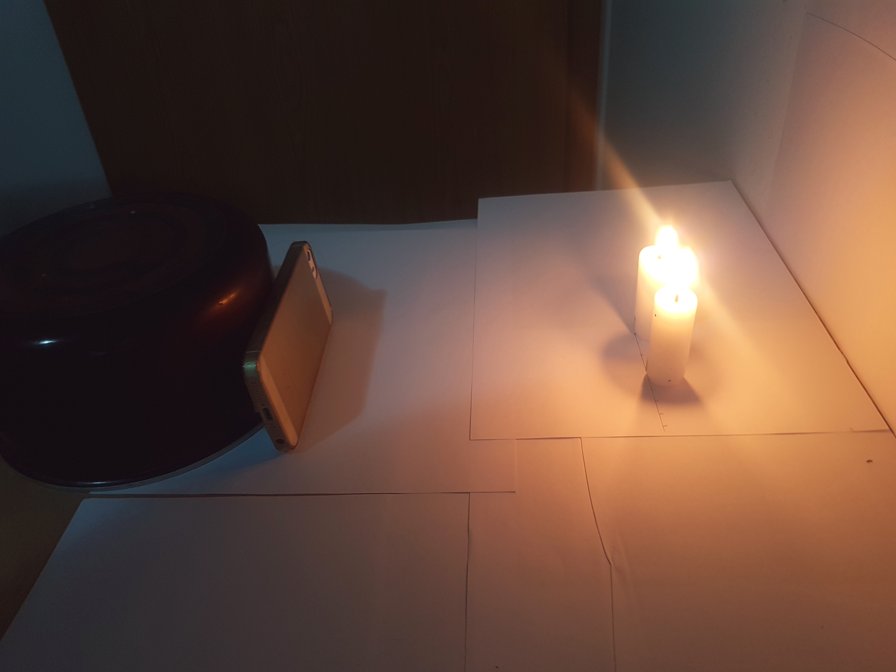
|
|||||||||||||||
|
|
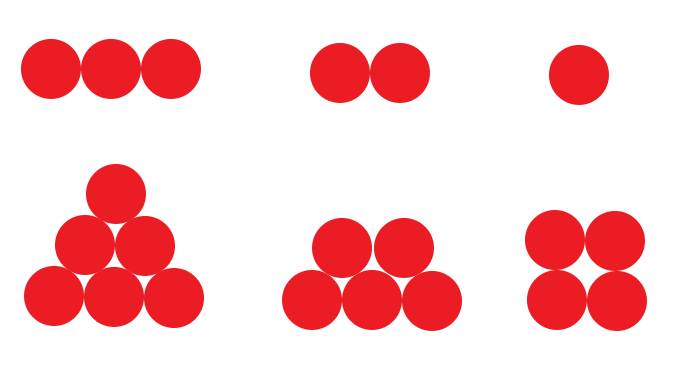 | ||||||||||||||
| Slika 3 | Slika 4 | ||||||||||||||
| 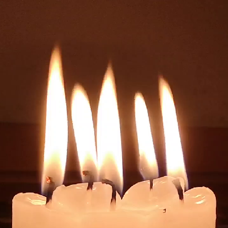 | 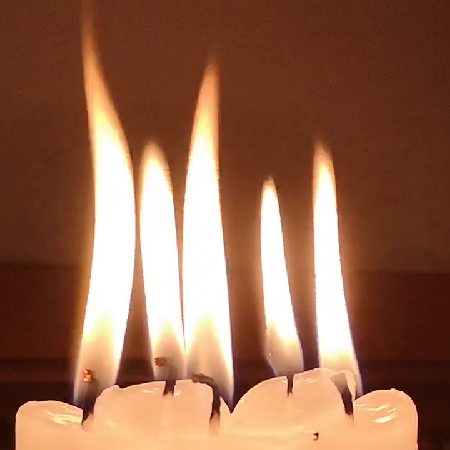 | 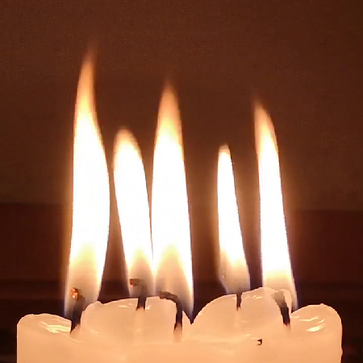 | 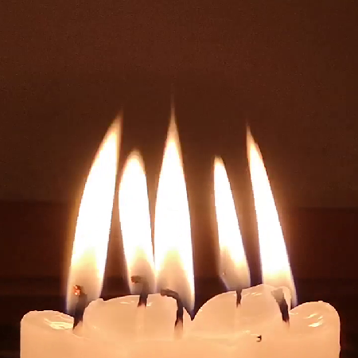 |
| 1 | 2 | 3 | 4 |
|
|
||||||||||||||||||||||||||||||||||||||||||||||||||
| Rezultati meritev za N=1 | Rezultati meritev za N=3 | ||||||||||||||||||||||||||||||||||||||||||||||||||
| 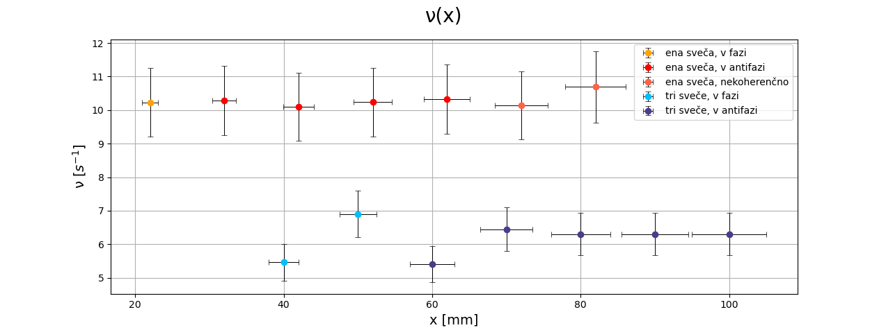 | |||||||||||||||||||||||||||||||||||||||||||||||||||
| Graf odvisnosti frekvence od razdalje med oscilatorjema, ko oscilator gradi ena sveča ter tri sveče. | |||||||||||||||||||||||||||||||||||||||||||||||||||